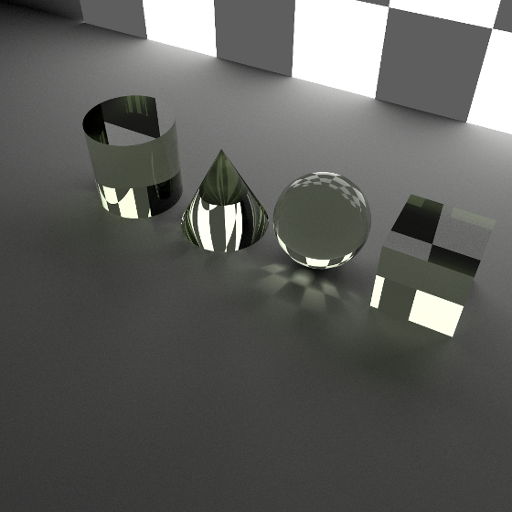

7. Primitives¶
The raysect primitives: sphere; box; cylinder; and cone.
7.1. Geometric Primitives¶
7.1.1. Sphere¶
-
class
raysect.primitive.Sphere¶ A sphere primitive.
The sphere is centered at the origin of the local co-ordinate system.
Parameters: - radius (float) – Radius of the sphere in meters (default = 0.5).
- parent (Node) – Scene-graph parent node or None (default = None).
- transform (AffineMatrix3D) – An AffineMatrix3D defining the local co-ordinate system relative to the scene-graph parent (default = identity matrix).
- material (Material) – A Material object defining the sphere’s material (default = None).
- name (str) – A string specifying a user-friendly name for the sphere (default = “”).
-
__init__¶ Initialize self. See help(type(self)) for accurate signature.
7.1.2. Box¶
-
class
raysect.primitive.Box¶ A box primitive.
The box is defined by lower and upper points in the local co-ordinate system.
Parameters: - lower (Point3D) – Lower point of the box (default = Point3D(-0.5, -0.5, -0.5)).
- upper (Point3D) – Upper point of the box (default = Point3D(0.5, 0.5, 0.5)).
- parent (Node) – Scene-graph parent node or None (default = None).
- transform (AffineMatrix3D) – An AffineMatrix3D defining the local co-ordinate system relative to the scene-graph parent (default = identity matrix).
- material (Material) – A Material object defining the box’s material (default = None).
- name (str) – A string specifying a user-friendly name for the box (default = “”).
-
__init__¶ Initialize self. See help(type(self)) for accurate signature.
7.1.3. Cylinder¶
-
class
raysect.primitive.Cylinder¶ A cylinder primitive.
The cylinder is defined by a radius and height. It lies along the z-axis and extends over the z range [0, height]. The ends of the cylinder are capped with disks forming a closed surface.
Parameters: - radius (float) – Radius of the cylinder in meters (default = 0.5).
- height (float) – Height of the cylinder in meters (default = 1.0).
- parent (Node) – Scene-graph parent node or None (default = None).
- transform (AffineMatrix3D) – An AffineMatrix3D defining the local co-ordinate system relative to the scene-graph parent (default = identity matrix).
- material (Material) – A Material object defining the cylinder’s material (default = None).
- name (str) – A string specifying a user-friendly name for the cylinder (default = “”).
-
__init__¶ Initialize self. See help(type(self)) for accurate signature.
7.1.4. Cone¶
-
class
raysect.primitive.Cone¶ A cone primitive.
The cone is defined by a radius and height. It lies along the z-axis and extends over the z range [0, height]. The tip of the cone lies at z = height. The base of the cone sits on the x-y plane and is capped with a disk, forming a closed surface.
Parameters: - radius (float) – Radius of the cone in meters in x-y plane (default = 0.5).
- height (float) – Height of the cone in meters (default = 1.0).
- parent (Node) – Scene-graph parent node or None (default = None).
- transform (AffineMatrix3D) – An AffineMatrix3D defining the local co-ordinate system relative to the scene-graph parent (default = identity matrix).
- material (Material) – A Material object defining the cone’s material (default = None).
- name (str) – A string specifying a user-friendly name for the cone (default = “”).
-
__init__¶ Initialize self. See help(type(self)) for accurate signature.
7.2. CSG Operations¶
Operations such as union, substract, intersect on some basic glass primitives:
# Making the lense in the centre
s1 = Sphere(1.0, transform=translate(0, 0, 1.0-0.01))
s2 = Sphere(0.5, transform=translate(0, 0, -0.5+0.01))
Intersect(s1, s2, world, translate(0,0,-3.6)*rotate(50,50,0), glass)
# More complex glass structure
cyl_x = Cylinder(1, 4.2, transform=rotate(90, 0, 0)*translate(0, 0, -2.1))
cyl_y = Cylinder(1, 4.2, transform=rotate(0, 90, 0)*translate(0, 0, -2.1))
cyl_z = Cylinder(1, 4.2, transform=rotate(0, 0, 0)*translate(0, 0, -2.1))
cube = Box(Point3D(-1.5, -1.5, -1.5), Point3D(1.5, 1.5, 1.5))
sphere = Sphere(2.0)
Intersect(sphere, Subtract(cube, Union(Union(cyl_x, cyl_y), cyl_z)), world, translate(-2.1,2.1,2.5)*rotate(30, -20, 0), glass)
7.3. Meshes¶
It is easiest to import meshes from existing CAD files in either obj or stl with the helper methods.
-
raysect.primitive.mesh.obj.import_obj(cls, filename, scaling=1.0, **kwargs)¶ Create a mesh instance from a Wavefront OBJ mesh file (.obj).
Some engineering meshes are exported in different units (mm for example) whereas Raysect units are in m. Applying a scale factor of 0.001 would convert the mesh into m for use in Raysect.
Parameters: - filename (str) – Mesh file path.
- scaling (double) – Scale the mesh by this factor (default=1.0).
- **kwargs –
Accepts optional keyword arguments from the Mesh class.
Return type:
-
raysect.primitive.mesh.stl.import_stl(cls, filename, scaling=1.0, mode=0, **kwargs)¶ Create a mesh instance from a STereoLithography (STL) mesh file (.stl).
Some engineering meshes are exported in different units (mm for example) whereas Raysect units are in m. Applying a scale factor of 0.001 would convert the mesh into m for use in Raysect.
Parameters: - filename (str) – Mesh file path.
- scaling (double) – Scale the mesh by this factor (default=1.0).
- **kwargs –
Accepts optional keyword arguments from the Mesh class.
Return type:
An example:
from raysect.primitive.mesh import import_obj
mesh = import_obj("./resources/stanford_bunny.obj", scaling=1, parent=world,
transform=translate(0, 0, 0)*rotate(165, 0, 0), material=gold)